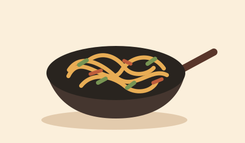

Gyozas al vapor (6 unidades)
Masa casera rellena de cerdo, cebolla de verdeo y jengibre, acompañadas de salsa de soja suave.
$18.000
Platos elaborados en el momento con técnicas tradicionales al wok e ingredientes frescos.
Masa casera rellena de cerdo, cebolla de verdeo y jengibre, acompañadas de salsa de soja suave.
$18.000
Crujientes rollos de vegetales frescos salteados, servidos con salsa agridulce artesanal.
$15.000
Relleno tradicional de carne y vegetales con toque de aceite de sésamo.
$19.500
La carta reúne arroz y fideos salteados con verduras, carnes o mariscos.
Arroz salteado con huevo, zanahoria, cebolla de verdeo, brotes de soja y carne vacuna o pollo.
$25.000
Arroz al wok con langostinos, lomo, pollo, huevo y vegetales de estación.
$28.500
Fideos de trigo salteados al wok con lomo, pollo, verduras crocantes y salsa de ostras.
$35.000

Infusión tradicional servida en tetera individual.
$4.500
Bocha de vainilla rebozada en masa crujiente con miel y semillas de sésamo.
$8.000